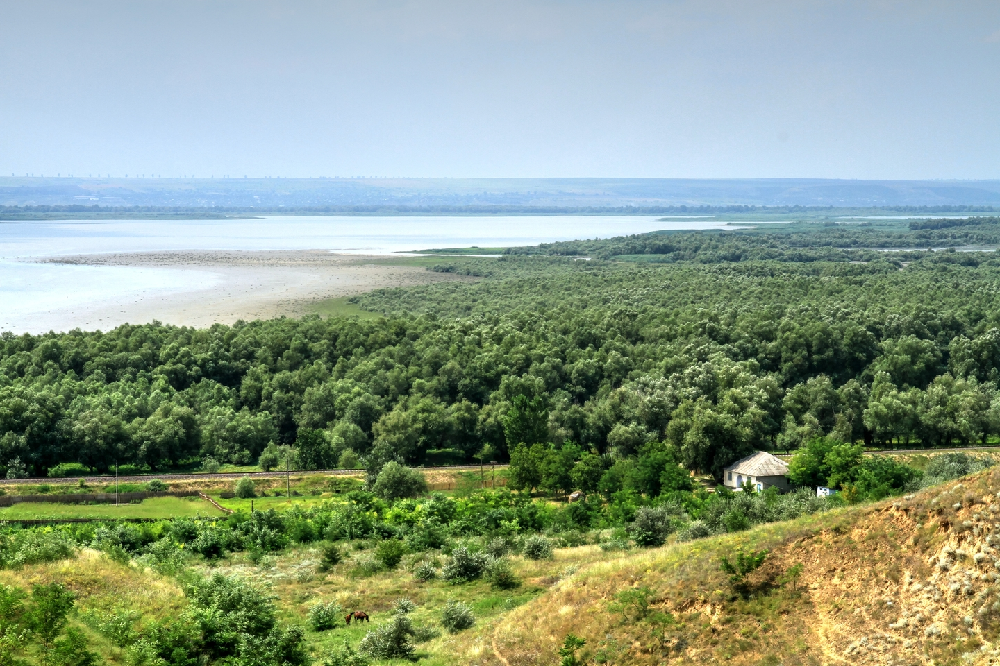

Rezervații Științifice
Arii Protejate de Stat din Republica Moldova
Ariile Protejate de Stat
Definiție: Aria protejată reprezintă un spaţiu natural, delimitat geografic, cu elemente naturale reprezentative şi rare, desemnat şi reglementat în scopul conservării şi protecţiei tuturor factorilor de mediu din limitele lui.
În Republica Moldova sunt 313 arii protejate, 158 amplasamente de arbori seculari (în total 429 arbori) și 472 specii rare de plante și animale. Suprafața totală a ariilor protejate se ridică la peste 150000 ha.
Cadrul legal de protecție îl reprezintă Legea nr. 1538 din 25.02.1998 privind fondul ariilor naturale protejate de stat.
Rezervațiile Științifice
Definiție: Rezervaţiile ştiinţifice sînt arii naturale protejate, obiectul cărora este protecţia şi conservarea unor habitate naturale terestre şi/sau acvatice, cuprinzînd elemente reprezentative de interes ştiinţific sub aspect floristic, faunistic, geologic, speologic, paleontologic, pedologic şi de altă natură.
Managementul rezervaţiilor ştiinţifice asigură un regim strict de protecţie prin care habitatele sînt păstrate într-o stare, pe cît este posibil, neperturbată. Teritoriul rezervaţiilor ştiinţifice este repartizat în zone. În zona cu protecţie integrală nu se permit nici un fel de activităţi, derularea proceselor naturale rămînînd intactă. În celelalte zone ale rezervaţiilor ştiinţifice se desfăşoară activităţi ştiinţifice şi alte activităţi menite să sporească gradul de conservare a teritoriului. Se elaborează recomandări speciale pentru tăierile de reconstrucţie în celelalte zone.
În Republica Moldova sunt 5 rezervații științifice: Codrii, Pădurea Domnească, Plaiul Fagului, Prutul de Jos și Iagorlîc.
Codrii
Rezervația a fost creată în 1971 pe o suprafață de 5177 ha. Aici sunt puse sub protecție circa 1000 specii de plante, 43 specii de mamifere, 145 specii de păsări, 7 specii de reptile, 10 specii de amfibii și peste 10 mii specii de insecte. Principalele specii de arbori în pădure sunt stejarul pedunculat, gorunul și fagul. În cadrul rezervației funcționează un bogat „Muzeu al naturii”.
Flora se compune din specii de plante, care provin din 3 regiuni fitogeografice: mediteraneană (forestieră), central-europeană (forestieră) și euroasiatică (stepică). În rezervație sunt înregistrate 60 de specii de plante rare, dintre care 23 sunt incluse în Cartea Roșie a Moldovei.Vegetația zonală este reprezentată prin păduri de foioase de tipul celor din Europa Centrală cu formațiunile: Fagus sylvatica, Querceta petraeae și Querceta roburis. Vegetația interzonală s-a format in văgăuni, fiind reprezentată prin fâșii înguste și pâlcuri de plopișuri, sălcișuri, răchitișuri și pajiști mezofile. Aici și-au gasit extremitatea estică a arealului unele specii central europene (fag, ferigi, orhidee, etc.) și extremitatea sudică (Eriophorum latifolium, Padus avium, etc).
Reprezintă aproape în totalitate pădurile Europei Centrale și de Vest. S-au format condiții favorabile de creștere și de reproducere pentru reprezentanții faunei din munții Carpați, Balcani, din Asia. Se întîlnesc specii rare, precum: jder de pădure, chițcan cu abdomen alb, usturoaie, etc.
Pădurea Domnească
Rezervația „Pădurea Domnească” este amplasată în lunca râului Prut și este unică prin biodeversitatea ei, tipurile de soluri și vegetație, relief, etc. Scopul ei principal este păstrarea celor mai reprezentative păduri de luncă și conservarea unor specii și comunități de plante și animale rare, restabilirea biodeversității celor mai caracteristice fitocenoze. Este cea mai bătrână pădure din ținut și una din cele mai vechi păduri de lunca din Europa.
Vegetația silvica în luncă s-a format de regulă pe teritorii relativ rar supuse inundațiilor de scurtă durată. Sunt evidențiate două niveluri ocupate de pădure: nivelul luncii inundabile și nivelul primei terase de luncă. În anumite perioade nivelul apelor crește și afectează orizonturile inferioare ale solului. În asociațiile cu esențe de plop, situate pe niveluri mai joase, sunt răspândite soluri aluviale carbonatice. În apropierea albiei râului unde predomină solurile aluviale stratificate gleizate, influențate de apele freatice determinat de râu, crește salcia. Vegetația din rezervație s-a format sub influența regimului apelor Prutului, a sistemelor de gârle prin care apele Prutului și râușorului Camenca pătrundeau și alimentau cu apele pădurile, pajiștile, mai ales în timpul inundațiilor. În funcție de acești factori, s-au format trei tipuri de vegetație: forestieră, pajiști de luncă și vegetație acvatică.
Fauna rezervației „Pădurea Domnească” este bogată și variată. Starea și structura arboretului de luncă cu numeroase poieni creează condiții favorabile pentru dezvoltarea multor specii de plante, animale și păsări. Flora bogată și variată creează condiții pentru dezvoltarea și înmulțirea mamiferelor, în special a copitatelor. Cei mai tipici reprezentanți ai copitatelor sunt Cerbul nobil (Cervus elaphus),cel mai mare mamifer sălbatic în fauna Moldovei; căpriorul (Capreolus capreolus), care se întâlnește în toate parcelele rezervației; mistrețul (Sus scrofa), cel mai numeros paracopitat de pe teritoriul rezervației. În limitele teritoriului dat se întâlnesc și specii rare de animale, introduse în Cartea Roșie: pisica sălbatică (Felis silvestris), jderul de pădure (Martes martes), chițcan cu abdomen alb (Crocedura leucodon), vidra (Lutra lutra), nurca europeană (Lutreola lutreola).
În anul 2005, în baza unui acord interstatal dintre conducerea Republicii Moldova și cea a Republicii Polone, s-a convenit de a reaclimatiza zimbrul în Republica Moldova. Drept urmare, în data de 19 august 2005 în rezervația naturală „Pădurea Domnească” au fost aduși 3 zimbri (un mascul și două femele) din 2 rezervații diferite din Polonia. Spre sfârșitul anului 2013, populația de zimbri din rezervația Pădurea Domnească a ajuns în număr de șase. În rezervație zimbrii sunt ținuți într-un țarc cu o suprafață de 32 de hectare, care poate găzdui până la 18 exemplare.
Plaiul Fagului
Rezervația a fost fondată în 1992 și are o suprafață de 5642 ha, reprezentând o zonă cu rol de protecție pentru un ecosistem reprezentativ din punct de vedere silvic.
Cele mai răspândite specii de plante arboricole sunt: gorunul – ocupă circa 31% din suprafața împădurită, frasinul - cca 21%, carpenul – cca 19%. Deși are o pondere de numai 5%, fagul este cel mai răspândit anume în această rezervația, comparativ cu restul teritoriu al țării.
Pe teritoriul rezervației se întâlnesc cca 900 specii de plante, dintre care plantele vasculare alcătuiesc cca 640 specii, lichenii – cca 50 specii și alte specii. Din numărul total de specii floristice 77 au devenit rare, alcătuind aproximativ 33% din speciile rare de flora spontană a Republicii Moldova. Preponderent în aceasta rezervație cresc astfel de specii că mălinul, pana zburătorului, perișorul, ferigile și altele. Făgetele, care sunt cel mai mult răspândite aici, comparativ cu restul teritoriului republicii, alcătuiesc cca 260 ha sau 5% din teritoriul rezervației. Sectoarele cu stejar ocupă cca 230 ha sau aproximativ 4% din teritoriu.
Aria naturală este interesantă și atractivă din punct de vedere al complexului faunistic, adăpostind și asigurând condiții de viețuire și hrană pentru mai multe specii de mamifere, păsări și insecte (complexul entomofaunei este bine reprezentat în lunca văii Bîcului), dintre care: cerb (Cervus elaphus), cerb pătat, cerb lopătar (Dama dama), mistreț (Sus scrofa), jder de pădure (Martes), pisică sălbatică (Felis silvestris), bursuc (Meles meles), hermelină (Mustela frenata), veveriță (Sciurus carolinensis), specii de lilieci, buhă mare (Bubo bubo) sau cucuvea (Athene noctua).
Prutul de Jos
Rezervația științifică Prutul de Jos este o arie protejată amplasată în cursul de jos al râului Prut, incluzând Lacul Beleu și împrejurimile sale, în sud-vestul Republicii Moldova. Lacul Beleu cu o rețea de bălți, în ansamblu, formează un ecosistem unic.
Rezervația a fost creată la 23 aprilie 1991 în scopul ocrotirii florei și faunei din lacul Beleu și a luncilor inundabile din împrejurimile lui. Suprafața rezervației este de 1691 ha, circa ⅓ din suprafața rezervației este ocupată de apele lacului Beleu, restul teritoriului este prezentat prin vegetația palustră și de luncă inundabilă.
Vegetația, în cea mai mare parte a teritoriului rezervației, este reprezentată de desișurile de trestii și stuf, sălcișuri, precum și de un covor bogat de plante de apă, de luncă inundabilă (papura, pipiriga, nufărul, crinul de apă, răculețul, lintița). În total, aici cresc 193 specii de plante, dintre care sunt incluse în Cartea Roșie a Moldovei: nufărul alb (Nymphaea alba), categoria UICN de raritate – II (specie periclitată), salvinia (Salvinia natans), cornaciul plutitor (Trapa natans). Pădurile de stejar comun prefera sectoarele de luncă cele mai ridicate care foarte rar sunt inundate.
Pe teritoriul rezervației se întâlnesc și specii rare de mamifere: vidra (Lutra lutra), hermelina (Mustera erminea), nurca europeană (Mustela lutreola) ș.a
Ihtiofauna complexului acvatic este reprezentată de peste 30 de specii de pești: crapul, carasul, plătica, văduvița, avatul, babușca, somonul, șalăul, cosașul ș.a. Specii rare: plătica de Dunăre, bibanul-soare, cega, soretele, mihalțul ș.a.
Conform Legii ariilor protejate din 1998, Prutul de Jos este o rezervație științifică. A primit acest statut în 1991. La 13 noiembrie 2018, rezervația a fost înscrisă în Rețeaua Mondială UNESCO a Rezervațiilor Biosferei, devenind prima rezervație a biosferei instituită în Republica Moldova.
Iagorlîc
Rezervația a fost înființată în anul 1988. În prezent, suprafața rezervației este de 8,77 km2.
Rezervația include sisteme ecologice acvatice și terestre, în care au fost create condiții pentru reproducerea animalelor și plantelor. Este situată la gura râului Iagorlîc, pe malul stâng al Nistrului. Rezervația a fost organizată în scopul păstrării și studierii condițiilor ecologice caracteristice bazinelor de apă din apropierea Nistrului. Cea mai mare valoare a rezervației naturale "Iagorlîc" constă în faptul că aici sunt foarte multe specii de plante rare și pe cale de dispariție, care intră în fitocenozele unicale, situate pe pantele calcarizate de stepă ale râurilor Iagorlîc, Iagorlîcul uscat și a unor pârăuri mari.
Bazinele de apă ale rezervației de asemenea sunt preferate de diverși reprezentanți ai faunei. Cea mai mare însemnătate ele o au pentru diverse specii de pești, care le folosesc pentru depunerea icrelor. Ihtiofauna enumeră 23 de specii de pești. Se intâlnesc 29 de specii de mamifere, 121 de specii de păsări din 14 ordine. Specii rare sunt: popândăul european (Spermophilus citelus), hermelina, șarpele de alun, șarpele cu abdomen galben, broasca țestoasă de apă. Din speciile incluse în Cartea Roșie a Moldovei se întâlnesc lebăda neagră, iar vulturul pescar (Pandion haliaetus) și eretele vânat (Circus cyaneus) se întâlnesc în timpul migrației. Ornitofauna rezervației constituie 167 de specii de păsări, dintre care 91 dintre ele își fac cuiburi. 15 specii de păsări, înregistrate în rezervația naturală, sunt incluse în Cartea Roșie a Moldovei (2001), 12 specii în Cartea Roșie a Ucrainei (1994).
Pentru mai multe informații despre Ariile Protejate din RM vedeți:
Arii protejate din Republica Moldova
LEGE Nr. 1538 din 25.02.1998 privind fondul ariilor naturale protejate de stat
Cadastrul ariilor naturale protejate de stat
Serviciul Public al Datelor de Mediu. Arii Protejate
Despre site
Pagina conține date publice (Internet) despre Ariile Protejate de Stat din Republica Moldova.
Scopul elaborării sitului: Promovarea cunoștințelor despre APS. Testarea posibilităților bibliotecii JavaScript Storymap.
Autor: Veaceslav Zagaevschi. Terra Concept SRL
Facebook Twitter storymap.js. Released Date: 20.02.2017. Version: 2.5. MIT License.
storymap.js. Released Date: 20.02.2017. Version: 2.5. MIT License.
Datele geospațiale: Cartodb, Terra Concept și Oikumena